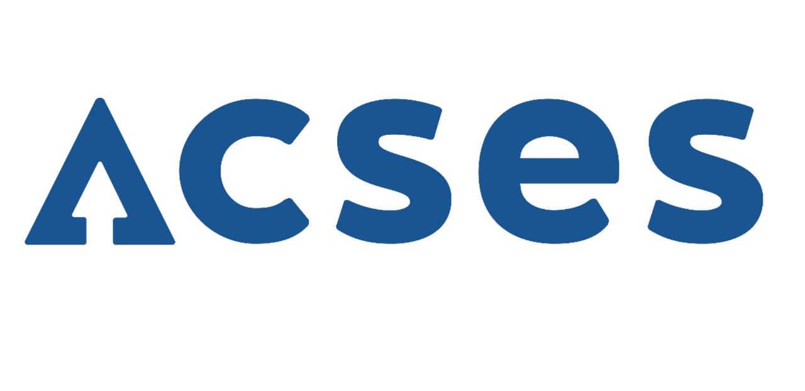

Piyush Chaudhari
- pchaudhari37@gatech.edu
- piyush.kailash.chaudhari@gmail.com
- +91 8308413121
About Me
I currently work at Veritas in the VRP(Veritas Resiliency Platform) Team. As a software engineer. Java and Python are the languages I am working on for the last 2 years. Building different microservices and implementing REST APIs using technologies like Spring, Spring-Boot RabbitMQ and Cassandra database. Along with my work, I am pursuing a Masters Degree in Data Science and Machine learning from the Georgia Institute of technology. And I have developed a great interest in this space.
Work Experience
software Engineer
▸ Design and implementation of messaging service for the product which
could orchestrate 50000 thousand messages or events per second
▸ Designed and developed Risk Framework for a product called VRP in
which the framework helps the product to write risk signatures and alert the
users about the risk.
▸ Participated in the design and development of virtual machine
Orchestration solution to OpenStack, Huwaie, and OBS flexible engine
cloud.
▸ Develop a feature in VRP which provides resiliency of the
Infrastructure management server.
- Veritas VRP
- Spring Boot
- JAVA 8
- Rabbit MQ
- Cassandra
- Multi Threading
Undergraduate Intern
▸ Developed a project using the IPMI protocol using spring boot and
java 8
▸ Implemented several REST API which could be fired so that the
communication with the IPMI enabled server can be done
- Veritas VRP
- Spring Boot
- Java 8
- Rest API
- Angular JS
Education
Graduate Student
▸ I am pursuing my masters in Machine Learning from College of
Computing of Georgia Institute of Technology, Atlanta, USA.
▸ Specialization Courses :
▸ Machine Learning
▸ Machine Learning for Trading
▸ Reinforcement Learning
▸ Data Visualization and Analytics
▸ Graduate Algorithms
B.Tech in Computer Science & Engineering
▸ I have completed my graduation from Computer Science and
Engineering Department of Walchand College of Engineering with CPI 8.0).
▸ Worked as Club Service Director of Technical Student's
Association, Association of Computer Science and Engineering (ACSES),
for the year 2015-16.
Projects Completed
Develop a Neural Network Model for bank customer churn dataset with 7 hidden layers and 13 nodes in each layer
▸ The intention of this project was to solve the bank customer churn
problem which is a very hot problem faced by most of the banks. So the
solution which I developed
was a neural network model with 7 hidden layers and 13 nodes in each layer.
The model was trained with 2000 epochs and the dataset used have 10000
records. I have used
70:30 train:test ratio to train and test the model. All the graphical
visualization was done using the matplotlib library.
Technologies Used: Python, scikit-learn, Pandas, Numpy,
MatplotLib.
- Python
- Scikit-learn
- Numpy
- Pandas
- matplotlib
Compare the Supervised Learning algorithms
▸ The Project consisted of the task of comparing the Supervised
algorithms based on the classification accuracy and performance on the
famous Bank Churn Dataset.
The report which I created based on the comparison of the supervised
learning algorithms like Decision Trees, Support Vector Machines, K-NN,
Artificial Neural Networks
gave a deep understanding of the pros and cons of these supervised learning
algorithms.
Technologies Used: Python, Machine Learning, Classification,
Scikit-learn, Numpy, Pandas, Matplotlib.
- Machine Learning
- comparitive Analysis
- Supervised Learning
- Scikit-learn
Clustering and Dimentionality reduction on the Bank churn dataset
▸ The intention of this project was to perform clustering analysis and dimentionality reduction on the bank
churn dataset so as to observe if there is any performance improvement in the supervised learning model by using
these very useful tweaks.
Technologies Used: Python, Machine Learning, Linear Regression.
- Unsupervised Learning
- Scikit-Learn
- Python
- Kmeans
- PCA
Mechoserve
▸ This project is an android application for variety of smart phones. This application is developed for a start-up located in Pune, Maharashtra, IN. This application is developed as per the requirements of the comapny.
- Android
- Java
- Mobile Aoolication
Object Detection and Path Altering Robot
▸ Built a robot which can identify an object in its path and can
accordingly alter the path with use of Arduino.
▸ Components Used: Components Used: Arduino-UNO, Ultrasonic distance
measuring sensor, DC motors, Motor driver ICs, , Ultrasonic distance
measuring sensor, DC motors, Motor driver ICs.
- IoT
- Arduino-UNO
- C-Programming
- Ultrasonic Sensor
Relevant course work and skills
Technical Courses
Machine Learning for Trading, Software Architecture and Designing, Machine Learning, Business Intelligence, Information Security, Data Warehousing and Data Mining, Information Retrieval, High Performance Computing, Intelligent Systems, Soft Computing, Distributed and Cloud Computing, Database Engineering, Data Structure, Internet and Web Programming, System Software, Software Engineering, Operating Systems, Design and Analysis of Algorithm, Discrete Mathematics, Data Communication and Networking, Computer Networks, Processor Architecture, Statistics and Fuzzy Systems
Technical Skills
Programming Languages: Java8, Python, C/C++, SQL, CQL, HTML, CSS,
JavaScript
Machine Learning Libraries and Frameworks: NumPy, SciPy, Pandas,
scikit-learn, matplotlib, Keras
Technologies: Rabbit MQ, Spring, SpringBoot, MicroServices
Other Technologies and Databases : Git, Docker, Oracle 11c,
MySQL, Cassandra
Other Skills: Statistics and Probability
Professional Activities & Awards
-
ACSES-Association of Computer Science & Engineering Students, WCE [link] ↳ Club Service Director (Jun 2015- Jun 2016) • 1 year
-
ACM- College Campus Chapter [link]
 ↳ Secretary (April 2016- May 2017) • 1 year 1 month
↳ Secretary (April 2016- May 2017) • 1 year 1 month